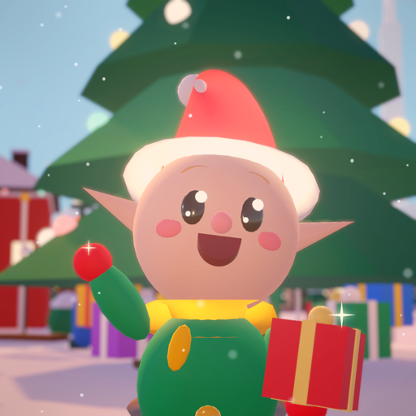

Santora
Sıcak bir oyuncak fabrikası tycoon oyunu
Kendi oyuncak şirketini yönet. Atölyeleri kur, hangi müşteriye hizmet edeceğini seç, her oyuncağı kamyon, tren ya da kızakla gönder. Küçük bir atölye, 150 level boyunca karlı ve hareketli bir kasabaya dönüşür.
Yakında App Store'da
Oyuncak fabrikası kurOdun, kumaş ve tenekeyi peluş ayılara, oyuncak arabalara, müzik kutularına ve kurmalı robotlara dönüştür.
Siparişini seçHer müşteri farklı. Hızlı teslimat sözü ver, daha fazla kazan.
Demiryolunu işletTrenin vagonlarını ayarla, bedava malzeme getirsin; hat boyundaki kasabalara teslim et.
Kasabanı büyütHer binayı kendin yerleştir, ormanı aç, meydanı süsle.
Adil oyun
Bonus videolar her zaman senin seçimin. Level 8'e ve 30 dakikalık oyuna kadar banner ya da tam ekran reklam yok, ilk oturumunda tam ekran reklam yok; sonrasında da bir oturumda yalnızca birkaç tane.